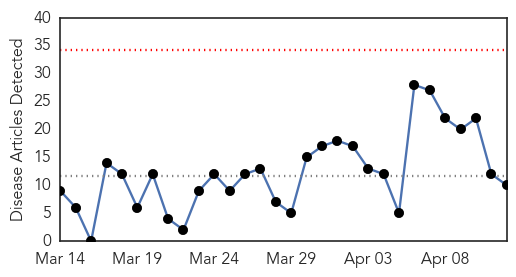
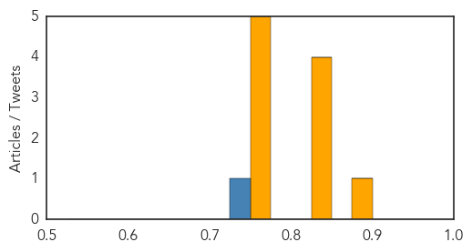
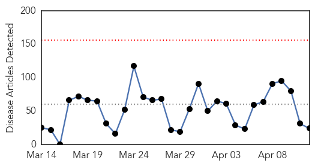
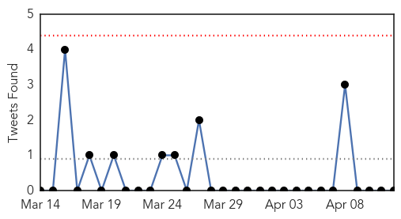
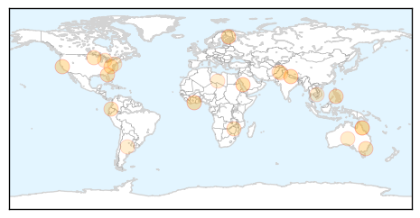

Influenza
30-Day Web Trend
0 alerts, 0 warnings

30-Day Twitter Trend
0 alerts, 0 warnings
Article Locations

Article Confidences
Top Articles:
- 0.879
- Children with Neurological Disorders Need Flu Vaccine but Don't Always Get It
- 0.845
- Why You Should Still Get the Flu Shot
- 0.839
- 29 Ontario farms under bird flu quarantine
- 0.835
- Experts say new and improved Australian flu vaccine could save lives
- 0.831
- 29 Ontario farms under bird flu quarantine
- 0.772
- Bird flu confirmed at 1 ND turkey farm, 4 more in Minnesota
- 0.751
- April 11, 2015 Archives
- 0.751
- April 11, 2015 Archives
- 0.751
- April 11, 2015 Archives
- 0.751
- April 11, 2015 Archives
Top Tweets:
- 0.746
- RT: Flu one the decline nationwide. Most flu is now the influenza B strain, which is good match for this year's vaccine, http://t…
Unknown
30-Day Web Trend
0 alerts, 0 warnings

30-Day Twitter Trend
0 alerts, 0 warnings

Article Locations
Article Confidences
Top Articles:
- 0.984
- Unknown disease kills 8 in Jajarkot
- 0.961
- Saudi Arabia replaces health minister amid MERS fears
- 0.944
- Niger isolates suspected bird flu farm as region takes precautions
- 0.917
- Chicago Tribune
- 0.917
- Chicago Tribune
- 0.867
- Awareness campaign mounted against rising cases of HIV
- 0.839
- Lyme disease confirmed in humans from southern states
- 0.816
- Aged care facility in Canberra's south locked down due to gastroenteritis outbreak
- 0.785
- Los integrantes de Kiss ya se encuentran en el país
- 0.768
- Gene study helps explain Legionnaires' probe complications
- 0.765
- Justin Timberlake y Jessica Biel son padres de un varón
- 0.730
- Inside Zim's health sector, 35 years after independence
- 0.725
- Second case of banana disease confirmed in Australia
- 0.676
- What to know about recent food recalls and bacteria listeria
- 0.620
- Are you healthy — really?
- 0.606
- Second case of feared banana disease confirmed
- 0.601
- With recent recalls, Q&A answers questions about listeria
- 0.595
- ‘Exercise can help reduce risk of Parkinson’s disease’
- 0.583
- Food poisoning sends 13 in ship's crew to Saint John Regional Hospital
- 0.564
- Penn Medicine Experts Unveil Two New Ways to Identify Joint Replacement Patients at Risk for Post-Operative Complications
- 0.560
- Pope calls Armenian slaughter ‘first genocide of 20th century’
- 0.551
- Turkey slams pope’s remarks on Armenian genocide
- 0.551
- Can Hillary Clinton’s ‘smart power’ take her to White House?
- 0.509
- Suspected cases in Sargodha found to be polio-free
Top Tweets:
-
No tweets found for Apr 12, 2015